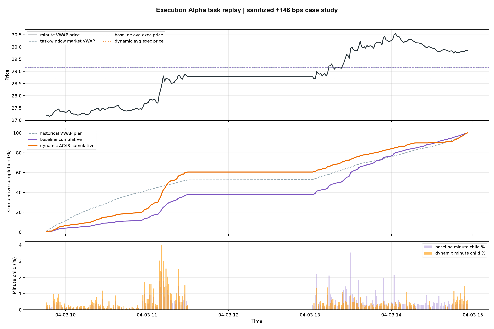

Short-horizon market state
Minute-level price and volume-profile features estimate near-term liquidity, impact, and price-pressure conditions without publishing private raw data or training code.
Markets · Signals · Research
Market briefs, upcoming earnings and quantitative research in one place. Read the latest updates first, then explore the evidence and the systems behind them.
01 · Market pulse
Latest levels and changes versus the previous close. Trading sessions differ across markets.
02 · Daily intelligence
The latest opening and closing digests for A-shares and US equities. Expand a market to read its news, signal status and selected tables.
03 · Earnings ahead
Companies expected to report later on the current New York date, ranked by market capitalization. Up to ten eligible companies; the list is not padded.
Open Nasdaq Calendar ↗Only companies whose expected release window has not started are included. Pre-market, undisclosed times and missing market caps are excluded. Times are estimated windows, not confirmed release times.
05 · Factor research
Manually published results from completed experiments: annualized metrics and group-return curves. Snapshot dates are shown below; these are historical research results.
06 · Execution research
A research comparison of participation schedules under liquidity, market-impact and inventory constraints. All results below are simulated.
Minute-level price and volume-profile features estimate near-term liquidity, impact, and price-pressure conditions without publishing private raw data or training code.
Expected cost, inventory risk, progress pressure, and participation caps are balanced to decide whether the next slice should speed up, slow down, or stay close to the baseline trajectory.
Backtests use rolling training windows, one-minute decisions, and fixed execution constraints so the displayed metrics remain comparable across model variants.
Model names below are public display aliases. Internal thresholds, feature recipes, data paths, and training code are intentionally omitted.
| Model | Role | Tasks | Mean | Median | Positive | P10 | Tail score |
|---|---|---|---|---|---|---|---|
| Core Adaptive | Rule-based baseline | 110,843 | +6.94 bps | +0.82 bps | 52.7% | -15.33 bps | +3.10 |
| Tail Guard | Risk-balanced rule set | 110,843 | +4.98 bps | +1.39 bps | 56.3% | -10.79 bps | +2.28 |
| Deep Guard | Tail-defense candidate | 110,843 | +3.08 bps | +1.30 bps | 58.4% | -7.69 bps | +1.16 |
| ML Adaptive | Machine-learning front end | 113,294 | +7.16 bps | +1.18 bps | 54.1% | -15.36 bps | +3.32 |
| ML Stable | ML with steadier execution | 113,294 | +6.36 bps | +1.57 bps | 56.3% | -12.70 bps | +3.19 |
| ML Switch | Dynamic model switching | 113,294 | +8.16 bps | +1.43 bps | 54.7% | -15.71 bps | +4.24 |
| Selective ML Switch | Filtered research upper bound | 51,480 | +9.34 bps | +2.17 bps | 56.0% | -17.14 bps | +5.06 |

Results are simulated improvement versus the execution benchmark. The table is a sanitized public summary only and is not a live trading system or investment advice. Tail score is a compact display metric combining average improvement and left-tail risk.
07 · The research stack
A remote factor-research environment that coordinates experiment runs, guarded compute execution, Qlib-based evaluation, and ranked performance summaries.
A market intelligence assistant that turns macro, market, and company news into daily research briefs for discretionary review.
A technical-analysis and model-ranking layer that produces email briefs, then publishes compact validation summaries after delivery.
A market-impact-aware execution research track that studies adaptive participation, VWAP-style scheduling, and AC/IS optimizer variants.
08 · Workflow
Start from a research direction, task budget, and safety envelope.
Dispatch experiments to a workstation with timeout, memory, and GPU-temperature guards.
Review metrics, logs, and group-return time series in a lightweight research dashboard.
Carry forward lessons and avoid repeating low-value experimental paths.
09 · About this site
Core trading logic, training code, raw logs, datasets, API keys, infrastructure addresses, and private prompts.
Selected market summaries, historical research metrics and charts, and an overview of the research systems.
Check each report date and research window. Historical simulations do not establish future performance; this site is for research review, not investment advice.